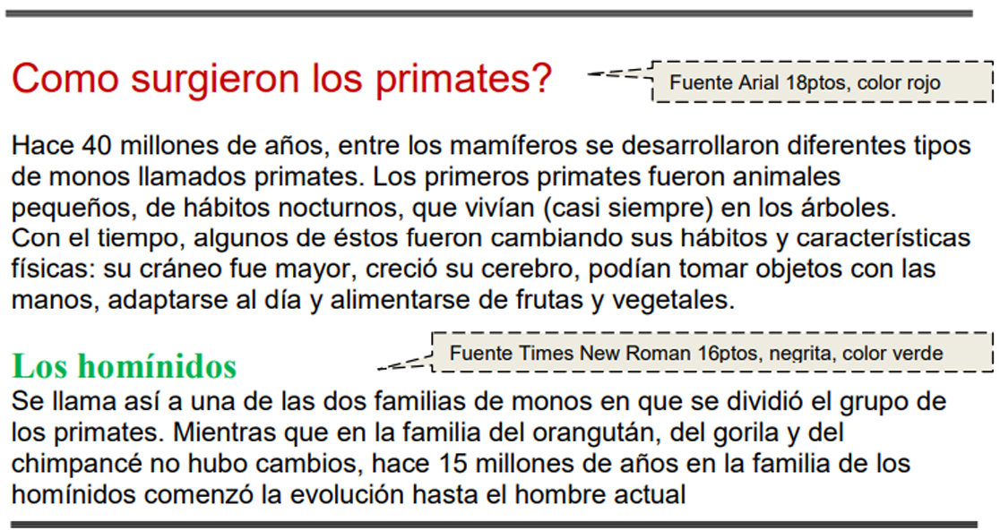
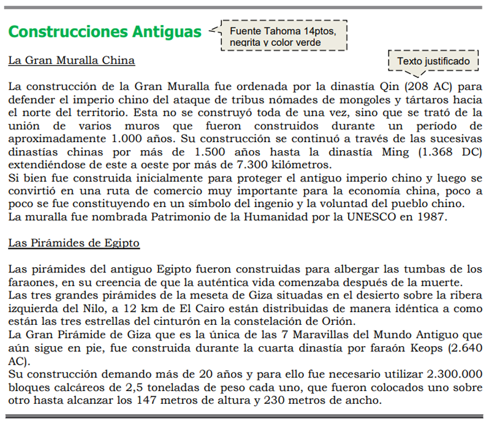

Uso de la herramienta ofimática Microsoft Word para el procesamiento de textos
Descripción
Como el resto de aplicativos productivos, los procesadores texto no se han quedado atrás y han avanzado en sus herramientas para optimizar cada vez más la generación de documentos de manera práctica automatizando tareas, generando documentos bien hechos y con las posibilidades del trabajo colaborativo y distribución de la información. Es fundamental asumir este reto formativo con un gran compromiso personal y profesional, pues el programa brinda herramientas para aplicarlas en las labores diarias para mejorar así con el tiempo y las buenas prácticas el desempeño y las posibilidades productivas de las empresas.
Competencias a desarrollar
• 220501121- Operar herramientas informáticas y digitales de acuerdo con protocolos y manuales técnicos.
Estrategia metodológica
Centrada en la construcción de autonomía para garantizar la calidad de los procesos formativos en el marco de la
formación por competencias, el aprendizaje por proyectos y el uso de técnicas didácticas activas que estimulan el
pensamiento para la resolución de problemas simulados y reales; soportadas en la utilización de las tecnologías
de la información y la comunicación, integradas, en ambientes abiertos y pluritecnológicos, que en todo caso
recrean el contexto productivo y vinculan al aprendiz con la realidad cotidiana y el desarrollo de las competencias.
Taller 1
Taller práctico.
Primeros pasos en Microsoft Word.
Desarrolle las acciones que propone el componente formativo y realice capturas de pantalla de los siguientes procesos:
● Cinta de opciones.
● Insertar fecha en el documento.
● Insertar tabla.
● Herramientas contextuales.
● Contraer la cinta de opciones.
● Comandos con teclado.
● Vista Backstage.
● Creación de PDF desde la vista Backstage.
● Personalizar barra de herramientas de acceso rápido.
● Personalizar cinta de opciones.
● Barra lateral de faceta izquierda.
● Iniciar sesión.
Al finalizar guarde el documento con las capturas de pantalla como PDF de acuerdo a lo aprendido.
Taller 2
Teniendo en cuenta la siguiente imagen sobre: "Primates" realice lo siguiente:

a) Aplicar estilo cursivo al primer párrafo ("Hace...") y subrayado al segundo ("Con...").
b) Modificar el tipo de fuente para el segundo párrafo siendo Bookman Old Style la que se deberá definir.
c) Modificar el tamaño de la fuente para el tercer párrafo ("Se...") siendo 11ptos el que se deberá definir.
d) Dejar una línea en blanco entre los títulos y los párrafos y entre los párrafos del documento.
e) Colocar el tema al documento (colores y fuentes) de su preferencia.
f) Agregue una imagen relacionada con los textos.
Taller 3
Teniendo en cuenta la siguiente imagen sobre: "Muralla-Pirámide" realice lo siguiente:

a. Especificar tamaño de papel A4 con márgenes izquierdo de 4cm y el resto de 2cm.
b. Aplicar sangría de 1ra línea en 2cm y definir interlineado en 1,5 líneas para cada párrafo del documento, excepto los títulos y subtítulos.
c. Cambiar a mayúsculas el título principal del documento y centrarse.
d. Cambiar el orden de la información, ahora el texto sobre la Gran Muralla China debe quedar al final del documento.
e. Copiar el primer párrafo de cada tema (incluyendo el subtítulo del mismo) en un nuevo documento de Word, el que se deberá guardar con el nombre Partes.doc. Dicho texto deberá poseer:
a. Sombreado estilo 15% y color verde lima para los párrafos
b. Sombreado estilo 20% y color turquesa para los subtítulos
f. En el 1er párrafo se define Letra capital de 2 líneas y distancia desde el texto de 0.5cm.
g. Insertar una nota al pie (final de página) al final del título principal de este documento con el texto “Datos extraídos de Internet”.
h. Colocar color de página azul claro. i. Guardar las modificaciones realizadas en todos los documentos.